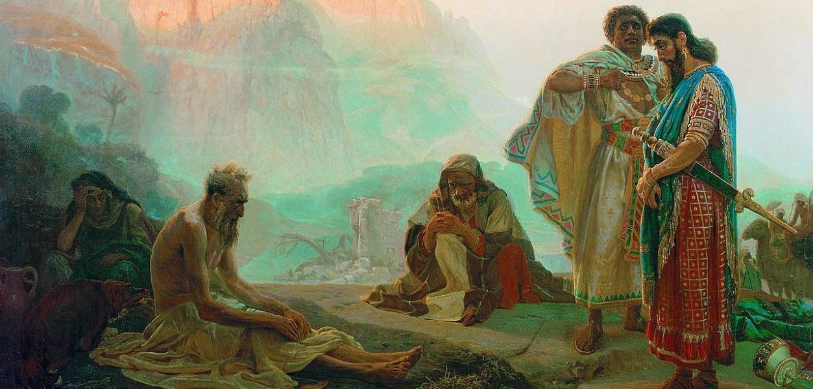
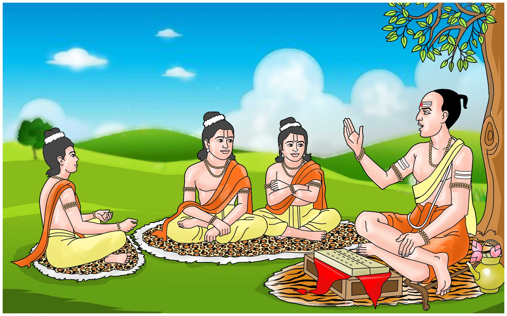
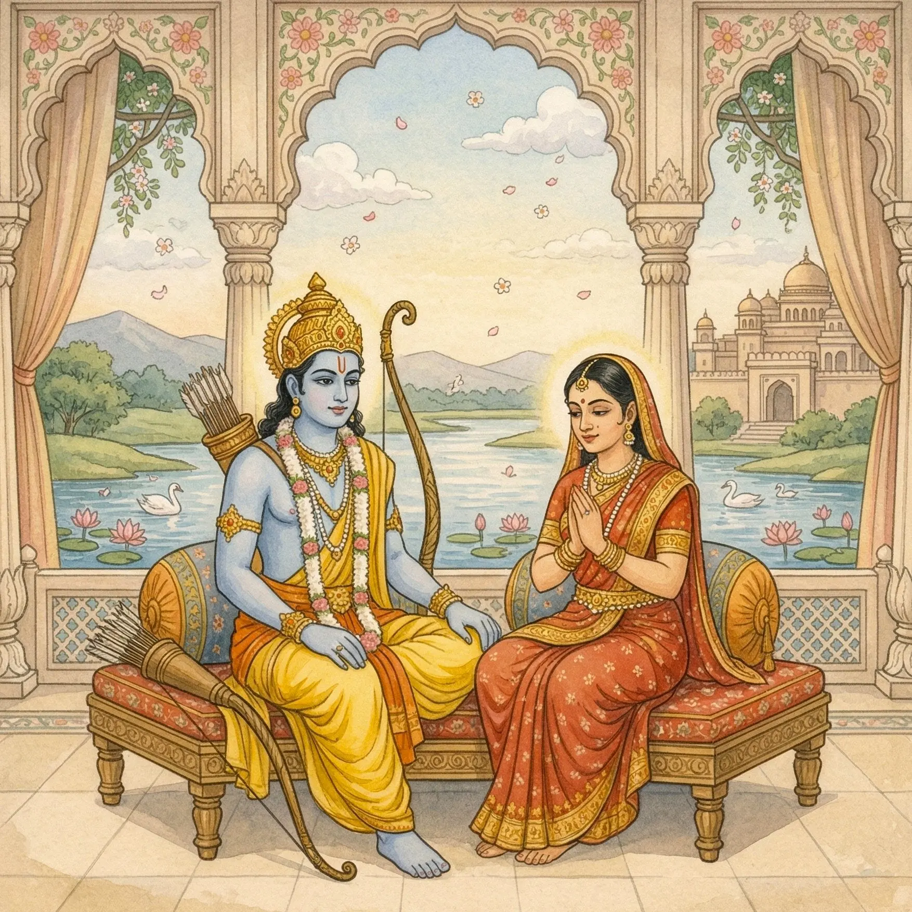
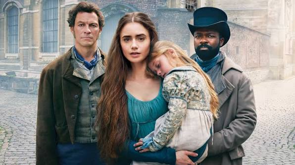
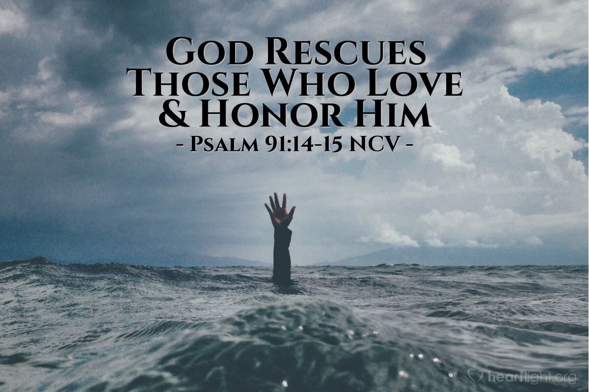

My Literary Journey
A Great Books Digital Portfolio
Bridging the logical precision of Information Technology with the timeless wisdom, human values, and moral insight of world literature.
Renan S. Alburo
Naga, Camarines Sur • Student & Reader of Literature
Personal Introduction
I am a dedicated IT student from Naga, Camarines Sur, who loves exploring not just codes and systems, but also stories that teach us about life, values, and human nature. While my focus is technology, I believe that literature helps me understand people better, which is important because technology is built to serve people. I am curious, eager to learn, and always looking for lessons that I can apply both in my studies and in my daily life.
Personal Interests in Literature
As an IT student, I spend most of my time with logic and systems, but literature gives me a different kind of insight, it helps me understand emotions, relationships, and human values. I am interested in how timeless stories can shape our character and guide our decisions. Reading Great Books helps me see the bigger picture: behind every app, system, or innovation are people, and these stories teach me how to respect, value, and serve them better.
Expectations & Learning Experiences
In this course, I expect to discover deeper meanings behind the world’s most beloved stories and learn how to see different perspectives through literary lenses. I look forward to building wisdom, strengthening my character, and connecting timeless lessons to my own life and future career. I believe studying Great Books will not only improve my reading and thinking skills but also help me become a more compassionate, responsible, and thoughtful person — someone who creates technology that truly helps and respects others.
Compilation of Seven Literary Analyses
Explorations of timeless masterpieces analyzed through distinct critical lenses. Click any card to read full details.

The Voice Out of the Whirlwind
From the Book of Job (Biblical text)
The Voice Out of the Whirlwind reminds us that human knowledge has clear limits, and true wisdom begins with humility...

Panchatantra — Books 1 & 2
Attributed to Vishnu Sharma
Panchatantra uses simple fables to teach powerful lessons about friendship, trust, and teamwork...

Ramayana
Attributed to Valmiki
The Ramayana stands as a guide to living with honor, duty, and integrity...
Mahabharata
Attributed to Vyasa
The Mahabharata reveals that life and choices are rarely simple, there is often no purely good or purely evil side...
The Odyssey
Attributed to Homer
The Odyssey is more than an adventure story, it is about the long, hard journey toward becoming the person we want to be...

Les Misérables
Victor Hugo
Les Misérables shows that mercy, kindness, and love have the power to change lives more than punishment or judgment ever can...

Psalm 91
From the Holy Scriptures
Psalm 91 offers comfort and strength by reminding us that we are never alone, even when fear, uncertainty, or danger surrounds us...
My Favorite Literary Masterpiece
Click the card below to read the complete personal narrative, images, and analysis.
Panchatantra — Books 1 & 2
Attributed to Vishnu Sharma
"I chose this as my favorite because every lesson in these stories matches exactly what I am going through right now. I built our capstone system, traveled all the way to Burias to collect data, and finished my tasks early. But when I got sick, everything fell apart..."
Summary of Learning
Explore my core learning modules through interactive tabs below.
Elements of Literature
Throughout the Great Books course, I learned so many important things that helped me understand stories and life in new ways. First, we studied the Elements of Literature. These are the basic parts that make every story complete — characters, setting, plot, conflict, and theme. I learned that characters are the people in the story; setting is where and when it happens; plot is the sequence of events; conflict is the problem the characters face; and theme is the main message or lesson about life. Knowing these elements helped me see how every part of a story connects and why each one is important.
Literary Devices
Next, we learned about Literary Devices. These are special tools writers use to make their stories meaningful, beautiful, and deep. I learned about symbols — where one thing stands for a bigger idea, like a flower standing for growth or a butterfly standing for change. We also learned about metaphors, comparisons, repetition, and imagery that helps us see and feel what the writer wants to say. These devices showed me that stories do not always explain things directly — sometimes they show us deeper truths through these special ways.
Literary Lenses
Then we studied Literary Lenses. These are like different ways of looking at a story to understand it more deeply. Instead of just reading to know what happens, we can look through a lens to find more meaning. For example, the moral lens helps us see lessons about right and wrong; the social lens shows how people treat each other; and the spiritual lens helps us see messages about faith, hope, and purpose. I learned that one story can have many meanings, and these lenses help me find lessons that I can use in my own life.
Short Literary Masterpieces
We also read and analyzed wonderful stories — "Hope for the Flowers" and "Everywhere in a Garden". These stories are simple but very powerful. Hope for the Flowers taught me about growing up, finding your own way, and not giving up even when things are hard. Everywhere in a Garden showed me that every plant has its own time to grow and bloom, just like every person. While reading these, I practiced finding literary elements, identifying devices like symbols, and using lenses to understand the deeper messages.
Core Insights & Thinking Skills
Overall, this course taught me that literature is not just about reading books or finishing schoolwork. It is about understanding people, cultures, and life itself. I developed better thinking skills — I learned to observe carefully, ask questions, connect stories to real life, and explain what I understand clearly. I learned that every story, no matter how simple, has something valuable to teach us.
Personal Reflection
Click each stage of my 5-step reflection journey below.
Growth as a Reader
Studying Great Books has been a meaningful journey for me. Before this course, I used to read stories just to finish them or answer assignments. I did not look for deeper meanings or connect them to my own life. But as we went through the lessons, my understanding and appreciation changed completely. I began to see that every story is not just words on a page — it carries real feelings, true experiences, and lessons that still guide us today. I learned that literature shows what people have lived, believed, and hoped for across time, and the truths we find in books can help us understand ourselves and the people around us better.
Overcoming Reading Challenges
Along the way, I faced some challenges. Some stories did not say things directly, and I had to think carefully to understand the symbols and hidden messages. At first, it was also hard to identify literary devices or know which lens to use when analyzing a work. I overcame these difficulties by reading slowly, taking notes, and connecting what I read to my own life — to my family, my friends, my struggles, and my dreams. When I linked the stories to what I already knew and felt, everything became clearer and easier to understand.
The Moral & Life-Centered Lens
Among all the approaches we learned, the moral and life-centered lens influenced me the most. This lens looks at lessons about right and wrong, personal growth, and what truly matters in life. It helped me see that no one is perfect — not the characters in the stories, and not us either. It showed me that making mistakes does not mean we are bad people; it means we are human, and we can always choose to do better. This approach touched me deeply because it does not just judge — it understands, and it gives hope that we can change and grow at any time.
Realizations About Life & Society
Through these lessons and stories, I gained important realizations about life, people, and myself. From Hope for the Flowers and Everywhere in a Garden, I learned that growth takes time and everyone has their own pace. I should not rush myself or compare my journey to others, just as flowers do not all bloom at the same moment. From other stories, I saw that true friendship means staying loyal and fair, even when things get hard. I learned that people are complex — we all have strengths and weaknesses, joys and sorrows — and we should be kind to one another because we do not always know what someone else is going through. I realized that doing the right thing is not always easy, but it is always worth it.
Application to Personal Life & IT Career
I will carry all these lessons with me in every part of my life. Personally, I will value myself more, trust my own path, and surround myself with people who stay true. I will be kind, patient, and honest, even when others are not. In my studies, I will work with purpose, give my best not just for grades but for real learning, and stand up for what is fair. In my future career as an IT professional, I will remember that technology is made for people. I will use my skills to help and respect others, to build things that serve everyone well, and to always treat people with dignity. Great Books taught me that being a good person is just as important as being skilled — and that is the most valuable lesson I will take with me forever.